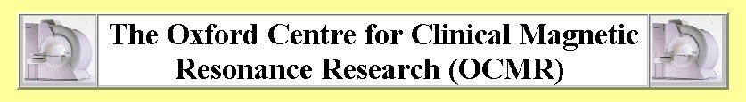

I am a member of the pain group, which is based jointly at FMRIB (see
our home page) and The
Department of Human Anatomy & Genetics (see Dr
Irene Tracey's web page).

Details
Researcher and collaborators at
FMRIB have limited access to a 'state
of the art' whole body 1.5T Siemens MR system which is located in the
MRS unit
(opposite FMRIB). Briefly, the scanner has 40mT/m gradient strength,
high slew rate (fast gradient switching), excellent magnetic field
uniformity, the ability to perform local shimming, etc. In addition to
the wide variety of pulse sequences suitable for functional, structural
and diffusion weighted imaging, the scanner has multinuclear
capability,
and can acquire single- and multi-voxel (chemical shift imaging)
spectroscopy data.
OCMR supports research in The
Deptartment of Cardiovascular Medicine
and Departments conducting neuroscience research (Psychiatry,
Experimental Psychology, Pharmacology and FMRIB). Click here for the
official OCMR web site
Booking (Last changed 12th July 2004)
Following unexpected downtime of the FMRIB scanner, we have been
allocated additional time on the OCMR scanner.
As of October the process for
booking the Thursday morning
FMRIB slot has changed. The main things to note are:
FMRIB time on the OCMR scanner is exclusively for pilot
studies and projects that have no external source of funding (e.g.
grants, etc.). If your scanning is funded then you should book outside
of FMRIB time (please contact OCMR managers
for advice on how to proceed, alternatively you can take a look at Dr
Clare Mackay's webpage
for additional information)
Those wishing to book time on the OCMR scanner *must* have
both a FMRIB and an OCMR project number
The OCMR project description form can be opened/downloaded here
(Microsoft Word format, please
contact me if you would like me to send hardcopy or plain text
version). Please return completed forms to me (preferably electronically)
Once I have obtained both numbers, I can supply details on
how to view the scanner diary and book time on the OCMR scanner
If you have any problems please email
me. Good luck!
{kind=link}